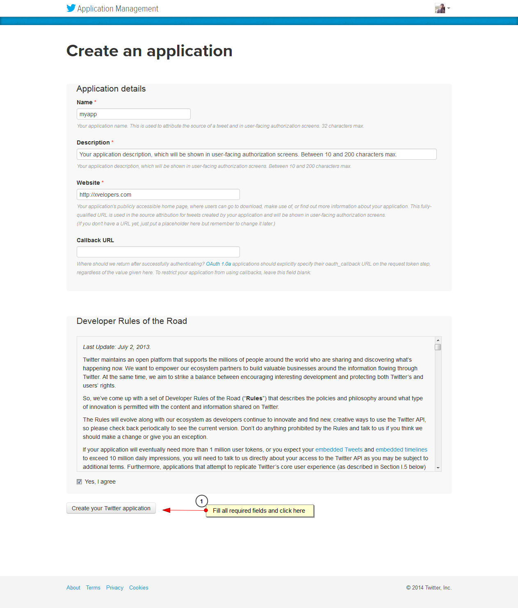
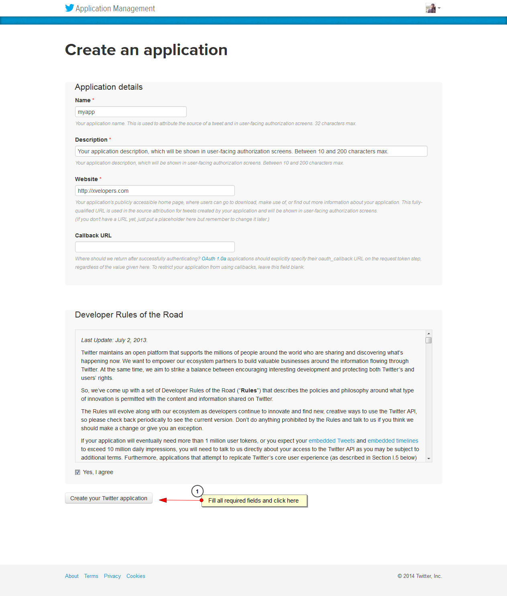

Theme Structure
This theme was built with the help of Twitter Bootstrap.
Open the TEMPLATE folder and your will find all HTML, CSS, JS and PHP files that you'll need to customize and add your content.
HTML Files
| File Name | Description |
|---|---|
index.html |
Home Page to dispaly latest albums, events news and blogs |
index2.html |
Another Layout for Home |
index3.html |
Another Layout for Home |
album-detail.html |
List songs of your album and brif description |
album.html |
All of your albums |
artist-detail.html |
Let the world know about your artist |
artist.html |
List of Artists |
blog.html |
Blog posts |
contact.html |
Contact form and google map |
event-detail.html |
Detail of a event |
events.html |
List All of the events |
gallery.html |
Picture gallery |
news.html |
Latest news of your band |
video-detail.html |
Page to embed Video |
videos.html |
List of videos |
Stylesheets Files
assets/css folder
| File Name | Description |
|---|---|
main.css |
Main CSS file of the template. |
bootstrap.min.cssbootstrap-responsive.min.css |
Twitter Bootstrap framework. |
flexslider.css |
CSS file for sliders, used in "OUR PROJECTS" and "TESTIMONIALS". |
font-awesome.css |
CSS file for custom icons. |
prettyphotto.css |
CSS file for popup plugin. |
Javascript Files
assets/js folder
| File Name | Description |
|---|---|
main.js |
Main JS file to call and init all javascript used in the template. |
bootstrap.min.js |
Twitter Bootstrap framework. |
jquery-1.10.1.min.jsjquery.easing-1.3.pack.js |
jQuery library. |
modernizr-2.6.2.min.js |
Modernizr library. |
jquery.flexslider-min.js |
Flexslider script, used for sliders in the template : OUR PROJECTS and PORTFOLIO |
carouselFredsel.js |
Jquery carousel. |
jquery.easing-1.3.pack.js |
Easign plugin that produces easign feature |
isotope.js |
Filtring and sorting plugin, used for sorting of portfolio |
tweetable.js |
Latest Tweets |
flicker feed.js |
Flicker Feed |
Images Files
assets/img folder
All imges files are placed inside img folder, and img folder has sub folders. Imges Used in the demo has been replaced with dummy images
Fonts Files
assets/font folder
| File Name | Description |
|---|---|
Fonts awesome |
Fonts awesome |
Styles Styles customization and highlights
CSS Structure
main.css contains all of the specific stylings for the page. The file is separated into sections using:
/* Table OF Contents ========================== 1-General Styles 2-Navigation 3-Audio Player 4-Social Fonts 5-Albums 6-Breadcrumb 7-Home-Slider 8-Latest News,events,videos 9-Artist 10-photo gallery 11-blog 12-Upcomming Events 13-Sidebar 14-Contact 15-Footer 16-Responsive
JavaScript JavaScript customization and highlights
It is recommended that you must get familiar with the API of the plugins used in this template that will help to modify things easily, Links to the plugin sites cold be found in the credit section
Structure
/* Table OF Contents
==========================
0-prettyPhoto
1-Navigation
2-Calander
3-Vegas Slider
4-Jplayer
5-Sliders
6-Flicker
7-Tweet
8-Google Maps
9-Gllery
Gallery
var $containerfolio = $('.showcase');
if($containerfolio.length) {
$containerfolio.isotope({
layoutMode: 'fitRows',
filter: '*',
animationOptions: {
duration: 750,
easing: 'linear',
queue: false
}
});
}
$('.filter-out li a').click(function () {
$('.filter-out li').removeClass("active");
$(this).parent().addClass("active");
var selector = $(this).attr('data-filter');
$containerfolio.isotope({
filter: selector,
animationOptions: {
duration: 750,
easing: 'linear',
queue: false
}
});
return false;
});
For sorting and filtration of projects isotpe.js plugin is used. For API detail VisitProjects are being loaded from external html pages. Get familiar with jquery API to undetstand the code Visit here.
How to use flexslider
$('#container').flexslider({
animation: "slide",
directionNav: false,
controlNav: false,
pauseOnHover: true,
slideshowSpeed: 6000,
direction: "horizontal" //Direction of slides
});
More options and documentation, please check here.
CarouselFredsel Slider
$('.selector').carouFredSel({
width: "100%",
circular: false,
infinite: false,
auto: false,
scroll: {
items: 1,
easing: "linear"
},
prev: {
button: "#selector-prev",
key: "left"
},
next: {
button: "#selector-next",
key: "right"
},
});
More options and documentation, please check here.
Tweets
open sourse plugin
How to get Access Key/API Key For Tweet configurations,
Follow the following steps and then update config file for tweet plugin (assets/php/tweet_api/config.php)
Login to twiiter and visit https://apps.twitter.com/ and please follow steps to create an app for twitter feed. 


/*===================
Tweets
===================*/
$('.latest-tweet').twittie({
username:'envato',
dateFormat: '%b. %d, %Y',
template: '{{tweet}} ',
count: 2,
apiPath:"assets/php/tweet_api/tweet.php",
});
/*============================
6-Flicker
============================*/
$('#flicker-feed').jflickrfeed({
limit: 6,
qstrings: {
id: '52617155@N08'
},
itemTemplate: 'Tweets. FlickerFeeds.
Google Maps
We rock provides easy way to use google maps, User only have to write addres, map skin, zoom level into html like:
<div id="google-map"
class="contact-map"
data-theme="pink"
data-address="kansas city"
data-zoomlvl="13"
data-maptype="HYBRID"></div>
Map Theme Options:
- data-theme="pink"
- data-theme="red"
- data-theme="blue"
- data-theme="yellow"
- data-theme="green"
//This is how google map function call is: contactemaps(selector_map, mapAddress, mapType, zoomLvl,map_theme);More options and documentation, please check here.
Jplayer
Visit Jpalyer API Page to understand how to use jplayer